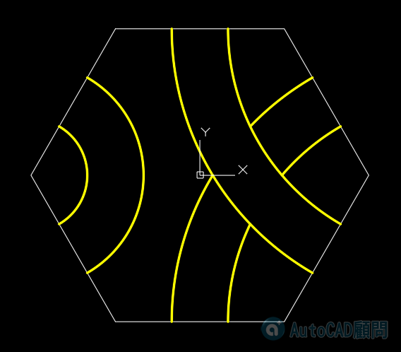
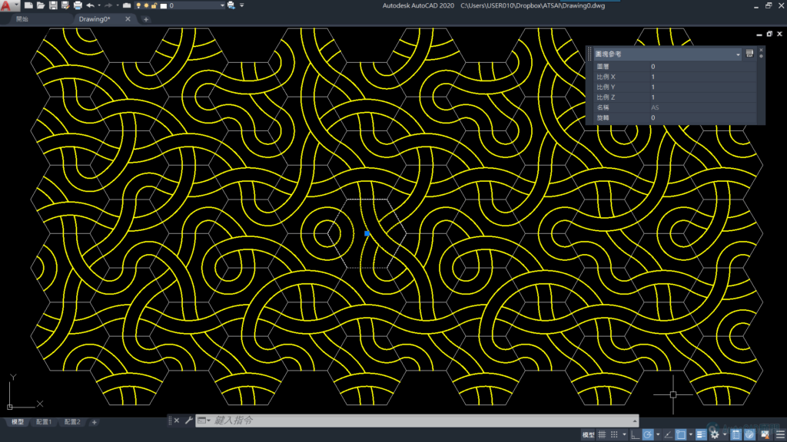
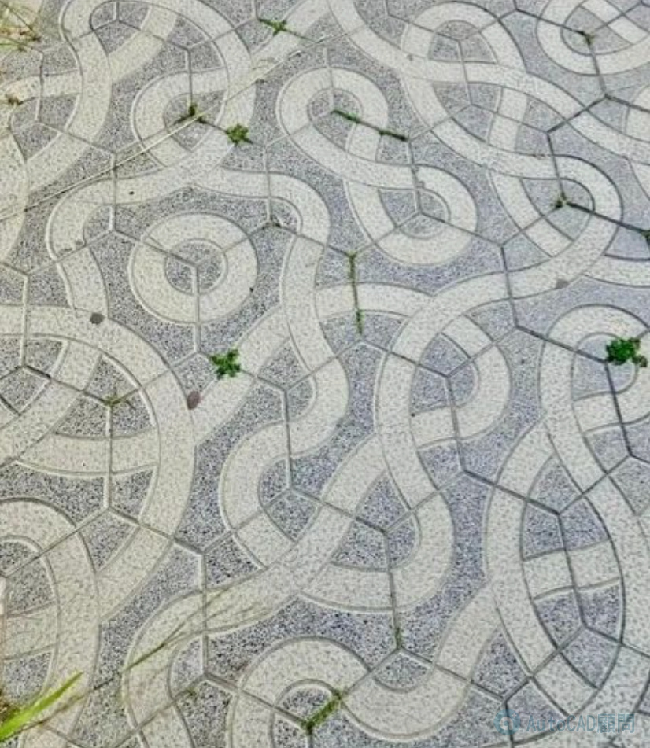

<p>先畫一個標準單元圖塊</p>

<p>無論如何排列 旋轉 陣列都可以變成迷宮</p>

<p>實際案例(西班牙薩洛雷尼亞)</p>

<div class="video-frame"><iframe src="https://www.youtube.com/embed/oaUkwwsNlCQ" allow="accelerometer; autoplay; clipboard-write; encrypted-media; gyroscope; picture-in-picture" allowfullscreen loading="lazy"></iframe></div>
<p>👇陣列程式下載👇</p>
